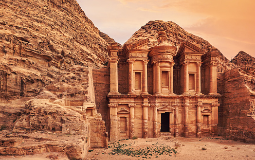

Petra is an ancient city located in Jordan and is one of the most popular tourist destinations in the world. It is known for its iconic rock-cut architecture, including the famous Treasury building, which is featured in many movies and TV shows.
The city was once a thriving hub of trade and commerce, and its ruins tell a fascinating story of the Nabatean civilization that inhabited the area more than 2,000 years ago. Visitors can explore the many tombs, temples, and other structures that make up this unique and breathtaking site.
.
Do you want to learn more about The ancient city of Petra?